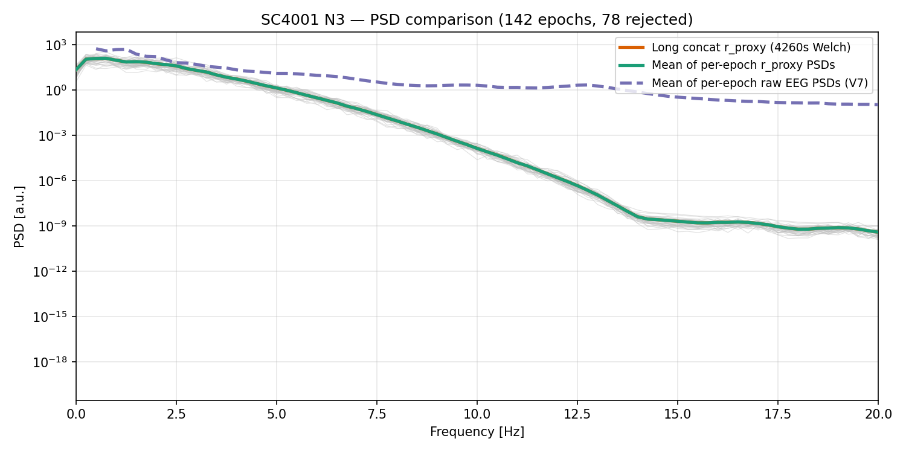
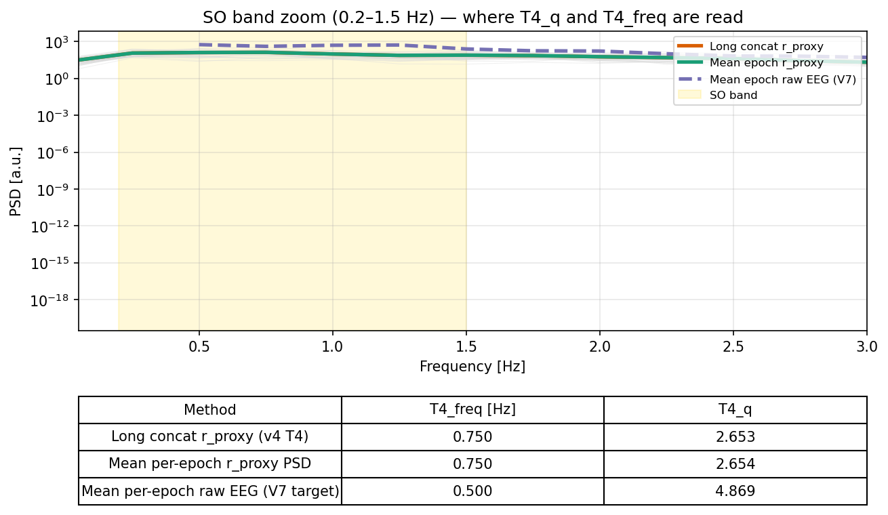
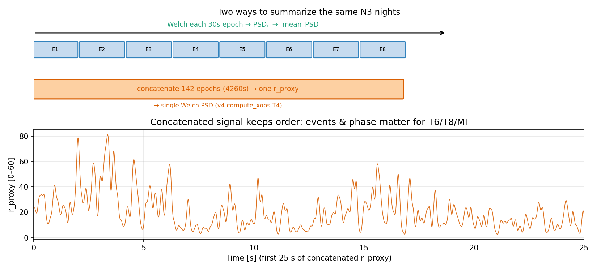

1. 术语
| 名称 | 脚本 | 一句话 |
|---|---|---|
| 观测臂 | compute_xobs_from_eeg_v3.py / v4.py |
真实 N3 EEG → 固定向量 x_obs |
| 仿真臂 | simulator_wrapper.py + V7 |
参数 θ → 60 s 模型 → x_sim |
| 训练 | run_sbi.py |
SNPE-C 学 p(θ | xobs) |
常见误解：142 个 N3 epoch 的 EEG 只进入观测臂。
仿真臂每次只接收 4 个自由参数 + Seed B 固定参数，不读长时程 EEG 波形。
2. 总数据流
SC4001 真实 N3 EEG
|
+---------------+---------------+
| |
v v
[观测臂] [仿真臂]
compute_xobs_*.py simulator(θ)
142 epoch 拼接 ~4260 s 60 s × 1000 Hz
r_proxy + eeg_raw r_ctx + r_thal
| |
v v
x_obs (5 或 7 维) x_sim (5 维*)
| |
+---------------+---------------+
|
v
run_sbi.py (SNPE-C)
* Phase 2 目标：仿真也导出 7 维（含 T6、MI）
3. 观测臂（真实 EEG → xobs）
3.1 输入
data/manifest.csv+ Sleep-EDF EDF，通道 Fpz-Cz- 仅 N3；峰峰值 > 200 µV 的 epoch 剔除
- 典型：约 142 个合格 epoch，合计约 4260 s
3.2 中间信号
eeg_uv → resample 1000 Hz → eeg_raw (detrend)
|
+-- eeg_raw → T6(v4), T8, MI, T11(v4)
|
+-- |eeg_raw| → 50 ms 平滑 → r_proxy [0,60]
→ T4_q, T4_freq
3.3 输出维度
| 版本 | 维数 | 文件 | 相对 v3 变化 |
|---|---|---|---|
| v3（当前 5 维 SBI） | 5 | S4_sbi/x_obs_v3.npz |
去掉 T6、MI |
| v4（Phase 2） | 7 | S4_sbi/x_obs_v4.npz |
EEG-native T6 + MI；T11 与 MI 同源 |
v3 实测（SC4001）：
[shape_r=1.0, T4_q=2.645, T4_freq=0.75, T8=15.31, T11=1.28]
| # | 键 | 观测端 |
|---|---|---|
| 0 | shape_r | 固定 1.0（哨兵） |
| 1–2 | T4_q, T4_freq | r_proxy Welch PSD |
| 3 | T8_n_sp_events | eeg_raw 纺锤事件 / 60 s |
| 4 | T11_lag_ms | up_down_ratio（v3：r_proxy 相位 × eeg_raw 幅） |
| 3* | T6_ibi_cv | v4 only：compute_t6_eeg_aasm(eeg_raw) |
| 6* | MI | v4 only：单通道 Tort PAC on eeg_raw |
4. 仿真臂（θ → 模型 → xsim）
4.1 加载时（一次）
load_target_psd()：每个 30 s N3 epoch 算 PSD → 平均 → FOOOF 周期谱
_target_periodic（仅供 shape_r）。
4.2 每次 simulator(θ)
θ = [g_h, g_LK, c_ctx2th, b] + Seed B: mue, mui, tauA, c_th2ctx build_model → m.run() 60s → r_ctx, r_thal → drop 5s burn-in → compute_constraints_v7 (T1–T12 全算) → 导出 SUMMARY_KEYS 中的 5 维
| # | 键 | 仿真端 |
|---|---|---|
| 0 | shape_r | FOOOF(r_ctx PSD) vs _target_periodic |
| 1–2 | T4_q, T4_freq | r_ctx PSD（V7 T4） |
| 3 | T8_n_sp_events | r_thal 事件 / 60 s |
| 4 | T11_lag_ms | PAC: r_ctx 相位 × r_thal 幅 |
| — | T6, MI | 在 con 内计算，当前不写入 x_sim |
5. 逐维对照（当前 5 维主线）
| 维 | 观测 (v3) | 仿真 | 同构？ | 说明 |
|---|---|---|---|---|
| shape_r | 1.0 固定 | r ∈ [0,1] vs 目标谱 | 否 | 哨兵设计；PPC 常在高端分位 |
| T4 | r_proxy PSD | r_ctx PSD | 公式同 | 信号不同（包络 vs 发放率） |
| T8 | eeg_raw 事件 | r_thal 事件 | 链类似 | 头皮 vs 丘脑 |
| T11 | 混合 PAC | ctx×thal PAC | 部分 | 比值语义一致 |
6. 长拼接 PSD vs 平均 PSD（T4 与 shape 目标）
复现脚本：S4_sbi/plot_concat_vs_mean_psd.py
| 方法 | T4_freq | T4_q | 用于 |
|---|---|---|---|
| 长拼接 r_proxy Welch（v3/v4 T4） | 0.750 Hz | 2.653 | 观测 T4 |
| 逐 epoch r_proxy PSD 平均 | 0.750 | 2.654 | ≈ 与上等价 |
| 逐 epoch 原始 EEG PSD 平均（V7） | 0.500 | 4.869 | shape_r 目标 |
在 r_proxy 上，长拼接与 epoch 平均对 T4 几乎相同。
T6 / T8 / MI 需要时间轴与事件，不能改为「只用一条平均 PSD」。



7. 工程状态
| 组件 | 维数 | 状态 |
|---|---|---|
| x_obs_v3 + simulator_wrapper | 5 | 已对齐；5 维 SBI 已完成 |
| x_obs_v4 | 7 | 运行 compute_xobs_from_eeg_v4.py 生成 |
| simulator Phase 2 | 7 | 计划导出 T6/MI（见 sprint1_phase2_plan_v2.md） |
| 7 维旧 run（May 7） | 7 | 归档；r_proxy 上 T6/MI 不可比 |
8. 延伸阅读
- sbi_obs_vs_sim_comparison.md（本页 Markdown）
- sbi_report_0511.md
- sprint1_phase2_plan_v2.md
S4_sbi/STAGE2_ARCHITECTURE.md- sbi_5dim_review_20260523.md（5 维 run 数字）